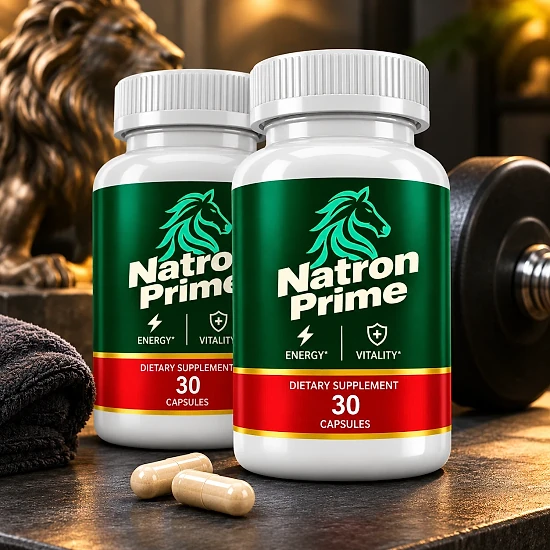
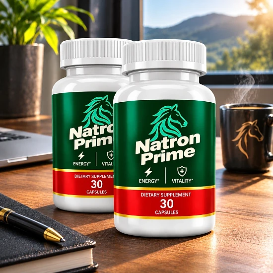
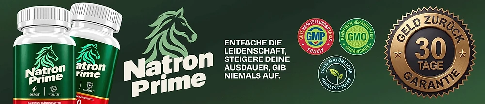

Was ist Natron Prime und wie wirkt es?
Natron Prime ist ein Nahrungsergänzungsmittel in Kapselform für erwachsene Männer ab 18 Jahren. Die offizielle Website beschreibt es als Produkt für Männer mit einem aktiven Alltag, die ihre tägliche Energie unterstützen möchten, und stellt die einfache Anwendung mit nur einer Kapsel pro Tag in den Vordergrund. Damit lässt sich das Produkt ohne großen Aufwand in den Tagesablauf integrieren.
Jede Flasche enthält 30 Kapseln. Die Formel kombiniert L-Citrullin, L-Carnitin, Niacin (Vitamin B3) und Zink mit Extrakten aus Pinienrinde, Maca-Wurzel, Traubenschalen und Safranfäden. Anders als viele Produkte dieser Art veröffentlicht die Marke ein vollständiges Etikett mit den Mengen jedes Inhaltsstoffs pro Kapsel.
Wie wirkt es? Die einzige gesundheitsbezogene Aussage, die die offizielle Website macht, betrifft Niacin: Niacin trägt zu einem normalen Energiestoffwechsel bei. Weitere Wirkversprechen nennt die Marke nicht, und auch wir machen hier keine darüber hinausgehenden Versprechen.
Die übrigen Inhaltsstoffe sind in der Welt der Nahrungsergänzung für Männer bekannte Pflanzenextrakte und Aminosäuren. Für sie gibt die Website keine eigenen Aussagen an, und auf dem Etikett ist für sie kein Nährstoffbezugswert festgelegt.
Natron Prime wird über Digistore24 verkauft, eine etablierte Plattform für digitale und physische Produkte. Im Impressum nennt die Website als Betreiber ein Unternehmen, das die Marken Vital Roots und Natron Prime führt.
Wichtig ist eine realistische Erwartung: Die Ergebnisse können von Person zu Person variieren, und ein Nahrungsergänzungsmittel ist kein Ersatz für eine ausgewogene, abwechslungsreiche Ernährung und eine gesunde Lebensweise, wie die Marke selbst ausdrücklich betont.
Natron Prime ist ein Nahrungsergänzungsmittel. Es ist nicht dazu bestimmt, Krankheiten zu diagnostizieren, zu behandeln, zu heilen oder ihnen vorzubeugen, und es ersetzt weder ärztlichen Rat noch eine verordnete Behandlung.
Natron Prime Inhaltsstoffe
Laut dem auf der offiziellen Website veröffentlichten Etikett enthält eine Kapsel Natron Prime die folgenden Inhaltsstoffe:
Vitamin B3 (als Niacin), 20 mg: 125 % des Nährstoffbezugswerts. Niacin trägt zu einem normalen Energiestoffwechsel bei.
Zink (als Zinkoxid), 11 mg: 110 % des Nährstoffbezugswerts, ein essenzielles Spurenelement.
L-Citrullin, 150 mg: eine Aminosäure, die unter anderem in Wassermelonen vorkommt.
L-Carnitin, 150 mg: eine Verbindung, die der Körper auch selbst bildet.
Pinienrindenextrakt (Pinus pinaster), 100 mg und Maca-Wurzelextrakt (Lepidium meyenii), 50 mg: zwei bekannte Pflanzenextrakte.
Traubenschalenextrakt (Vitis vinifera), 15 mg und Safranfädenextrakt (Crocus sativus), 5 mg.
Für die Aminosäuren und Pflanzenextrakte ist kein Nährstoffbezugswert festgelegt. Weitere Zutaten sind Hypromellose als Kapselhülle, mikrokristalline Cellulose als Füllstoff sowie Magnesiumsalze von Speisefettsäuren und Siliciumdioxid als Rieselhilfen.
Dass die Marke jede Menge offenlegt, ist ein Pluspunkt: So können Sie die Formel vor dem Kauf mit Ihrem Arzt oder Apotheker besprechen. Viele Produkte in diesem Bereich verstecken ihre Mengen hinter einer geheimen Mischung; hier sehen Sie dagegen genau, wie viel von jedem Inhaltsstoff in einer Kapsel steckt, und können die Angaben mit anderen Präparaten vergleichen, die Sie bereits einnehmen.
Natron Prime Nebenwirkungen
Die offizielle Website nennt keine bekannten Nebenwirkungen von Natron Prime, veröffentlicht aber klare Warnhinweise. Das Produkt ist nicht für Personen unter 18 Jahren und nicht für schwangere Frauen oder stillende Mütter geeignet. Die empfohlene Tagesdosis darf nicht überschritten werden.
Die Marke rät ausdrücklich, sich vor der Verwendung von einem Arzt beraten zu lassen, insbesondere wenn Sie Medikamente einnehmen, gesundheitlich eingeschränkt sind oder unter ärztlicher Aufsicht stehen. Das ist bei einer Formel mit mehreren Aminosäuren und Pflanzenextrakten ein sinnvoller Schritt, denn Wechselwirkungen hängen immer von der persönlichen Situation ab.
Allgemein bekannt ist, dass Niacin in höheren Mengen bei manchen Menschen eine vorübergehende Hautrötung mit Wärmegefühl auslösen kann. Eine Kapsel Natron Prime enthält 20 mg Niacin; wer zusätzlich andere Präparate mit Vitamin B3 oder Zink einnimmt, sollte die Gesamtmenge im Blick behalten.
Wie bei jedem neuen Nahrungsergänzungsmittel gilt: Beginnen Sie genau nach Verzehrempfehlung und achten Sie in den ersten Tagen darauf, wie Ihr Körper reagiert. Treten Beschwerden auf, setzen Sie die Einnahme ab und sprechen Sie mit Ihrem Arzt.
Verwenden Sie das Produkt nicht, wenn der Originalitätsverschluss beschädigt ist oder fehlt, und bewahren Sie es außerhalb der Reichweite von kleinen Kindern auf. Die individuelle Verträglichkeit kann variieren.
Natron Prime Dosierung
Die Verzehrempfehlung auf dem Etikett ist einfach: Erwachsene nehmen eine (1) Kapsel täglich als Nahrungsergänzungsmittel ein. Eine Flasche mit 30 Kapseln reicht damit für etwa einen Monat.
Nehmen Sie die Kapsel am besten jeden Tag ungefähr zur gleichen Zeit mit einem Glas Wasser ein, zum Beispiel zum Frühstück. Eine feste Routine hilft, regelmäßig zu bleiben, und Regelmäßigkeit ist bei Nahrungsergänzungsmitteln wichtiger als die genaue Uhrzeit. Die Website nennt keinen festen Zeitpunkt und keine Angabe zur Einnahme mit oder ohne Mahlzeit, deshalb gilt die Anweisung auf der Flasche.
Überschreiten Sie die empfohlene Tagesdosis nicht. Mehr Kapseln führen nicht zu besseren Ergebnissen, erhöhen aber die Menge an Niacin und Zink, die Sie zu sich nehmen. Wenn Sie Medikamente einnehmen oder eine Erkrankung haben, besprechen Sie die Einnahme vorher mit Ihrem Arzt.
Zur Aufbewahrung schreibt die Marke vor, das Produkt an einem kühlen, trockenen Ort bei unter 30 °C zu lagern und außerhalb der Reichweite von kleinen Kindern aufzubewahren. Schließen Sie die Flasche nach jeder Entnahme gut.
Natron Prime ergänzt einen gesunden Lebensstil mit ausgewogener Ernährung, Bewegung und ausreichend Schlaf, ersetzt ihn aber nicht. Die Ergebnisse können von Person zu Person variieren.
Natron Prime – Rückerstattung
Natron Prime wird laut offizieller Website mit einer 30-Tage-Geld-zurück-Garantie verkauft, und zwar ohne Angabe von Gründen. Die Frist beginnt laut Rückerstattungsrichtlinie mit dem Datum der Zahlungsabwicklung, das in der Bestellbestätigung steht.
Schritt 1 – Frist prüfen: Kontrollieren Sie anhand Ihrer Bestellbestätigung, ob Sie sich noch innerhalb der 30 Tage befinden.
Schritt 2 – Support kontaktieren: Schreiben Sie dem Support-Team eine E-Mail mit dem Betreff „Refund Request“. Eine Begründung ist nicht erforderlich. Als Kontakt nennt die Website die Adresse von Digistore24 (helpdesk@digistore24.ie) und die Telefonnummer +1 (814) 300-8172.
Schritt 3 – Flaschen zurücksenden: Senden Sie alle Flaschen zurück, egal ob leer oder voll, geöffnet oder nicht, zusammen mit dem Lieferschein und einer Notiz mit Ihrem vollständigen Namen, Ihrer E-Mail-Adresse und der Bestellnummer. Die Rückerstattungsseite nennt als Adresse: c/o Natron Prime, Kleine Esch 669, 2841 MK Moordrecht, Niederlande. Die Kosten der Rücksendung trägt der Kunde.
Schritt 4 – Erstattung abwarten: Laut Website wird die Erstattung nach Eingang des Pakets bearbeitet und per E-Mail bestätigt. Je nach Bank dauert es etwa 5 bis 10 Tage, bis der Betrag auf der Abrechnung erscheint.
Lesen Sie die vollständigen Bedingungen auf der offiziellen Website vor der Bestellung und bewahren Sie die Bestellbestätigung sowie die Sendungsnummer der Rücksendung gut auf.
Natron Prime – Wo kaufen?
Natron Prime wird über seine offizielle Website natronprime.com bestellt, und die Zahlung läuft über Digistore24. Laut Versandrichtlinie erhalten Käufer innerhalb von 60 Stunden eine E-Mail mit der Sendungsnummer, und die Lieferzeit nach Deutschland beträgt 5 bis 7 Werktage.
Flaschen von unbekannten Händlern können identisch aussehen, doch nichts erlaubt es, ihre Herkunft oder ihre Lagerung zu überprüfen. Für ein Nahrungsergänzungsmittel ist das eine echte Frage der Qualität und Sicherheit, und ein Kauf außerhalb der offiziellen Website ist möglicherweise nicht durch die 30-Tage-Garantie abgedeckt.
Deshalb bestellen die meisten Käufer Natron Prime direkt an der Quelle. Die offizielle Website sichert den Zugang zum authentischen Produkt, zum Kundenservice und zur vollständigen Garantie.
Achten Sie beim Bezahlen darauf, dass Sie sich auf der offiziellen Natron Prime-Website befinden, um jede Fälschung zu vermeiden. Prüfen Sie die Adresse in der Browserzeile und den Bestellvorgang über Digistore24, denn nur so gelten die Garantie und der Kundenservice der Marke ohne Einschränkungen. Bei Fragen hilft der Kundenservice weiter.
Um sicherzugehen, dass Sie das Originalprodukt erhalten, besuchen die meisten Nutzer die offizielle Website.
Ist Natron Prime Betrug?
Nach den Informationen der offiziellen Website scheint Natron Prime kein Betrug zu sein. Es handelt sich um ein echtes Nahrungsergänzungsmittel, das über Digistore24 verkauft wird, eine etablierte Plattform, und es richtet sich an erwachsene Männer, die ihre tägliche Energie unterstützen möchten.
Positiv fällt auf, dass die Marke ein vollständiges Etikett mit allen Mengen pro Kapsel, eine klare Verzehrempfehlung, Warnhinweise, ein Impressum, eine Telefonnummer und ein schrittweises Verfahren für die Rückerstattung veröffentlicht. Auch die Werbeaussage bleibt zurückhaltend: Die Website nennt nur die zugelassene Aussage zu Niacin und den Energiestoffwechsel.
Es gibt aber Punkte, die man kennen sollte. Die Rücksendeadresse ist nicht einheitlich: Die Rückerstattungsseite nennt die Niederlande, die Bestellseite eine Adresse in den USA, und das Impressum nennt ein Unternehmen in Brasilien. Außerdem ist die Kontakt-E-Mail die allgemeine Adresse von Digistore24, nicht eine eigene Adresse der Marke.
Unser Rat: Lesen Sie das Etikett sorgfältig, bewahren Sie die Bestellbestätigung gut auf und sprechen Sie mit Ihrem Arzt, wenn Sie Medikamente einnehmen oder eine Erkrankung haben.
Für Männer, die ein einfaches tägliches Nahrungsergänzungsmittel mit transparenter Formel suchen, kann Natron Prime eine Option sein, am besten über die offizielle Website bestellt und mit der 30-Tage-Garantie ohne Angabe von Gründen im Rücken.
Wer Produktdetails überprüfen oder die aktuelle Verfügbarkeit prüfen möchte, ist auf der offiziellen Natron Prime-Website am sichersten aufgehoben.

Verfügbarkeit auf der offiziellen Website prüfen
